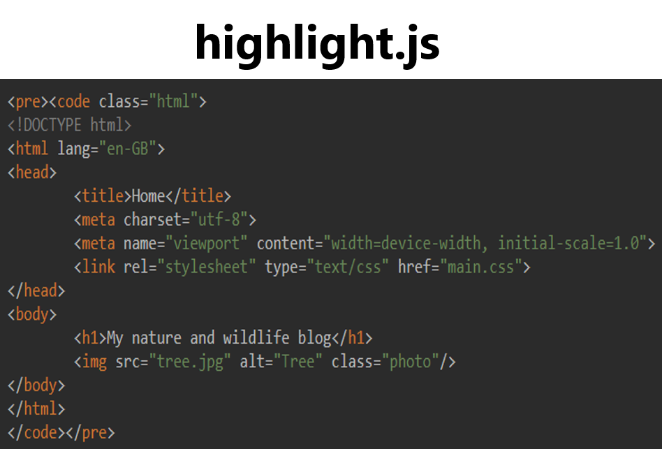
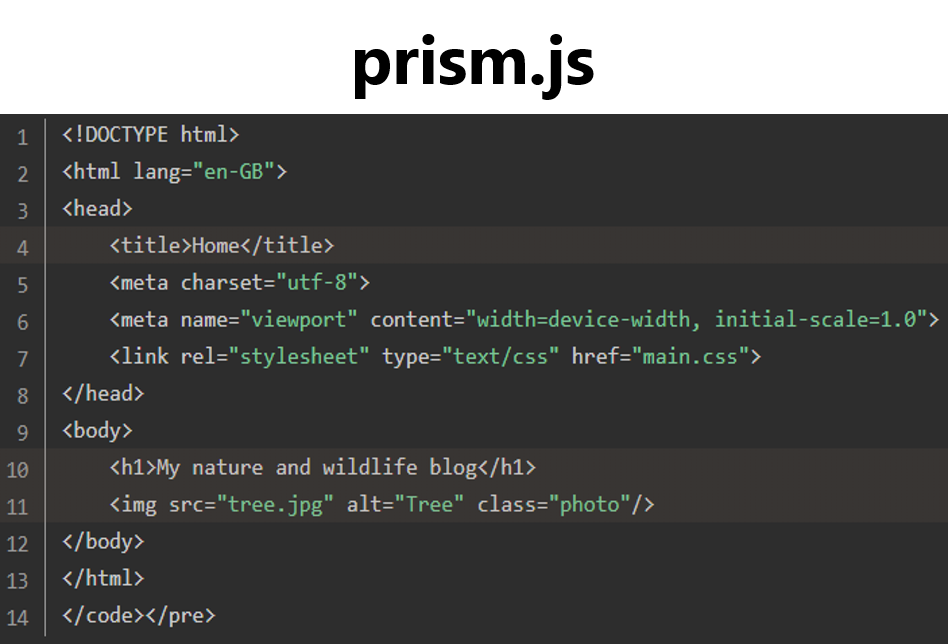
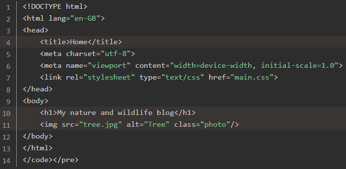

Как отобразить пример кода на вашем сайте
В этом руководстве вы узнаете, как отображать код в своём блоге/веб-сайте, который читатели могут легко скопировать и вставить. Мы также расскажем, как настроить внешний вид кода и использовать плагины, такие как нумерация строк и выделение строк.
 Отобразить код с помощью highlight.js
Использование highlight.js на вашем веб-сайте
Highlight.js - это пакет JavaScript, который позволяет вам добавлять пример кода на ваши веб-страницы. Highlight.js - это относительно простая программа для подсветки кода, которая не позволяет вам добавлять номера строк или выделять строки кода (см. prism.js); тем не менее, это один из лучших способов понять, как должны отображаться разные языки кода. Highlight.js также поставляется с темами, позволяющими настраивать внешний вид отображаемого кода. Готовые темы включают Android Studio, Github и код Google, поэтому ваш код может эмулировать множество популярных платформ.
Чтобы добавить highlight.js на свою веб-страницу, посетите их веб-сайт и скопируйте их готовые ссылки jsdelivrCSS и JavaScript в элемент head вашего HTML-файла.
<head>
<!-- other content of the head element goes here -->
<link rel="stylesheet" href="//cdn.jsdelivr.net/gh/highlightjs/cdn-release@11.3.1/build/styles/default.min.css">
<script src="//cdn.jsdelivr.net/gh/highlightjs/cdn-release@11.3.1/build/highlight.min.js"></script>
</head>
Обратите внимание, как ссылка на таблицу стилей заканчивается на “default.min.css”. Вы можете изменить тему своего примера кода, заменив слово “default” любым другим стилем, показанным в этой демонстрации. Если имя темы содержит пробелы, убедитесь, что вы заменили их дефисом. Например, если вы хотите использовать тему Base16/Atelier Estuary, замените default.min.css на base16/atelier-estuary.min.css. После внесения этого изменения элемент head будет выглядеть так:
<head>
<!-- other content of the head element goes here -->
<link rel="stylesheet" href="//cdn.jsdelivr.net/gh/highlightjs/cdn-release@11.3.1/build/styles/base16/atelier-estuary.min.css">
<script src="//cdn.jsdelivr.net/gh/highlightjs/cdn-release@11.3.1/build/highlight.min.js"></script>
</head>
После того, как вы добавили ссылки на таблицу стилей CSS и файлы JavaScript, вам нужно написать ещё одну строку кода в элементе head вашей HTML-страницы. Добавьте этот скрипт, чтобы активировать highlight.js и настроить его для работы с вашим примером кода:
<script>hljs.initHighlightingOnLoad();</script>В целом элемент head должен выглядеть так:
<head>
<!-- other content of the head element goes here -->
<link rel="stylesheet" href="//cdn.jsdelivr.net/gh/highlightjs/cdn-release@11.3.1/build/styles/default.min.css">
<script src="//cdn.jsdelivr.net/gh/highlightjs/cdn-release@11.3.1/build/highlight.min.js"></script>
<script>hljs.initHighlightingOnLoad();</script>
</head>Добавление примера кода на вашу веб-страницу используя highlight.js
Как только ваша веб-страница будет оснащена для использования highlight.js, вы можете добавить пример кода, который вы хотите показать своим читателям. Просто напишите пример кода в выбранном вами месте в элементе body вашей HTML-страницы и заключите его в открывающий <pre><code> и закрывающий </code></pre> теги. Если вам интересно, тег pre относится к предварительно отформатированному тексту, а тег code указывает на раздел кода.
Преимущество использования highlight.js заключается в том, что он может адаптировать свой подход к подсветке для языка программирования, который вы хотите отобразить. Чтобы сообщить highlight.js, какой язык программирования вы используете, добавьте текст “language-”, за которым следует название языка в качестве класса внутри открывающего тега <code>. Например, вы можете отобразить HTML-код на своей веб-странице следующим образом <code class="language-html">:
<pre><code class="language-html">
<!DOCTYPE html>
<html lang="en-GB">
<head>
<title>Home</title>
<meta charset="utf-8">
<meta name="viewport" content="width=device-width, initial-scale=1.0">
<link rel="stylesheet" type="text/css" href="main.css">
</head>
<body>
<h1>My nature and wildlife blog</h1>
<img src="tree.jpg" alt="Tree" class="photo"/>
</body>
</html>
</code></pre>Полный список поддерживаемых языков и соответствующих классов можно найти здесь.
Отображение кода с помощью prism.js и его плагинов
Использование prism.js на вашей веб-странице
Альтернативным средством подсветки синтаксиса для highlight.js является prism.js. У prism.js меньше доступных тем, чем у highlight.js; тем не менее, он предлагает множество полезных плагинов, которые помогут сделать код вашего примера интерактивным. Чтобы использовать prism.js, вы должны сначала посетить их веб-сайт и загрузить файл javascript и файл CSS. На странице загрузки prism.js вы найдете множество вариантов настройки файлов javascript и CSS. Количество вариантов может быть ошеломляющим, но есть только пара опций, которые вам нужно изменить, поэтому это не так сложно, как может показаться.
Вы можете оставить уровень сжатия на «Minified version» и ядро на «Core», но вы можете изменить тему. Вы можете проверить, как различные темы изменяют внешний вид кода примера внизу страницы. После того, как вы выбрали свою любимую тему, перейдите в раздел «Языки». Выбора по умолчанию (разметка, CSS, C-подобный и JavaScript) должно быть достаточно; тем не менее, не стесняйтесь отмечать другие языки из списка, если вы видите другие, которые хотите отобразить. Наконец, мы подошли к плагинам. Вскоре мы обсудим некоторые из самых популярных плагинов, но пока можно оставить этот раздел пустым.
После того, как вы выбрали свои предпочтения, вы можете загрузить файлы JS и CSS, используя кнопки внизу страницы. Храните загрузки в папке, где хранятся файлы вашего веб-сайта, и используйте имена файлов prism.js и prism.css соответственно.
Чтобы использовать prism.js на веб-странице, вам необходимо импортировать файлы CSS и JavaScript в элемент заголовка HTML-документа. В целом элемент head HTML-файла должен выглядеть так:
<head>
<!-- other content of the head element goes here -->
<link rel="stylesheet" type="text/css" href="prism.css">
<script src="prism.js"></script>
</head>Теперь, когда элемент head настроен, вы готовы добавить пример кода на свою веб-страницу.
Добавление примера кода на вашу веб-страницу используя prism.js